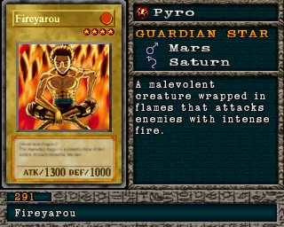

#291 · Monstro
Fireyarou
ATK1300
DEF1000
Nível4
TipoPiro
AtributoFire
Guardian StarsMarte / Saturno
Senha71407486
Star Chips80
Quem dropa no Mod 13
| Duelista | Rank | Chance | Média | |
|---|---|---|---|---|
| B/C/D | 1,27% 26/2048 | 1 em 79 duelos | ||
| S/A-POW | 1,07% 22/2048 | 1 em 93 duelos | ||
| Forest Mage | B/C/D | 1,07% 22/2048 | 1 em 93 duelos | |
| S/A-POW | 1,07% 22/2048 | 1 em 93 duelos | ||
| B/C/D | 1,07% 22/2048 | 1 em 93 duelos | ||
| S/A-POW | 1,03% 21/2048 | 1 em 98 duelos | ||
| Forest Mage | S/A-POW | 0,98% 20/2048 | 1 em 102 duelos | |
| S/A-TEC | 0,98% 20/2048 | 1 em 102 duelos | ||
| Forest Mage | S/A-TEC | 0,88% 18/2048 | 1 em 114 duelos | |
| S/A-POW | 0,73% 15/2048 | 1 em 137 duelos | ||
| B/C/D | 0,68% 14/2048 | 1 em 146 duelos | ||
| S/A-POW | 0,63% 13/2048 | 1 em 158 duelos | ||
| S/A-TEC | 0,63% 13/2048 | 1 em 158 duelos |
Quem dropa no jogo original
| Duelista | Rank | Chance | Média | |
|---|---|---|---|---|
| B/C/D | 1,27% 26/2048 | 1 em 79 duelos | ||
| S/A-POW | 1,07% 22/2048 | 1 em 93 duelos | ||
| Forest Mage | B/C/D | 1,07% 22/2048 | 1 em 93 duelos | |
| S/A-POW | 1,07% 22/2048 | 1 em 93 duelos | ||
| B/C/D | 1,07% 22/2048 | 1 em 93 duelos | ||
| S/A-POW | 1,03% 21/2048 | 1 em 98 duelos | ||
| Forest Mage | S/A-POW | 0,98% 20/2048 | 1 em 102 duelos | |
| S/A-TEC | 0,98% 20/2048 | 1 em 102 duelos | ||
| Forest Mage | S/A-TEC | 0,88% 18/2048 | 1 em 114 duelos | |
| S/A-POW | 0,73% 15/2048 | 1 em 137 duelos | ||
| B/C/D | 0,68% 14/2048 | 1 em 146 duelos | ||
| S/A-POW | 0,63% 13/2048 | 1 em 158 duelos | ||
| S/A-TEC | 0,63% 13/2048 | 1 em 158 duelos |
A chance vale por duelo vencido com o rank indicado. "1 em N" é a média de duelos para conseguir a carta. S/A-POW = vitória por força; S/A-TEC = vitória técnica; B/C/D = ranks baixos.